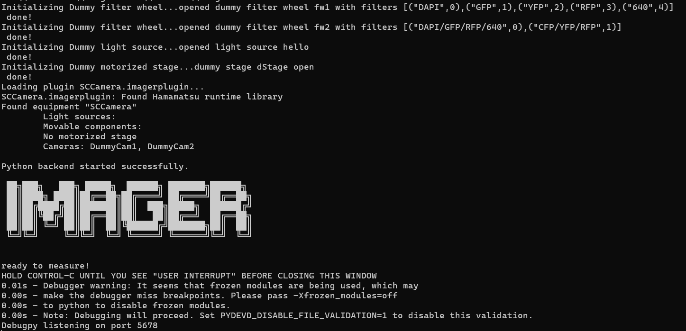
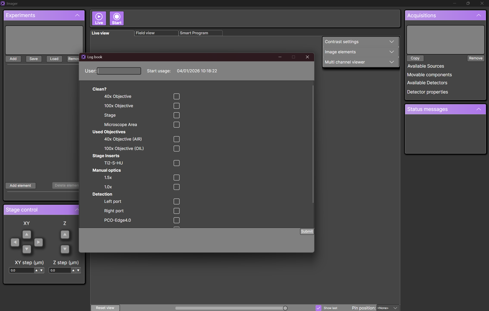
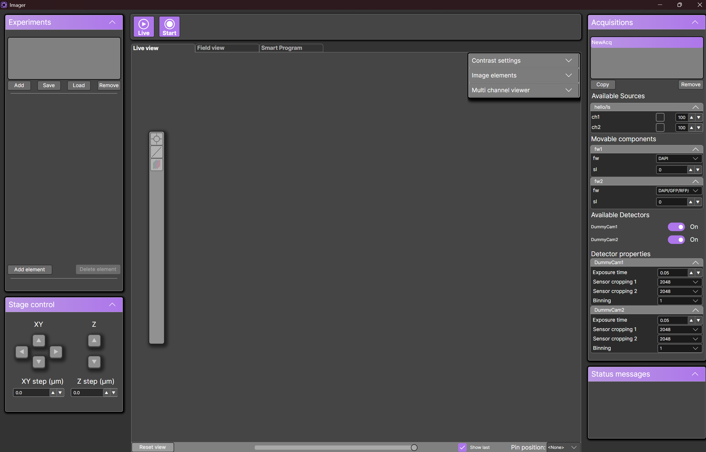
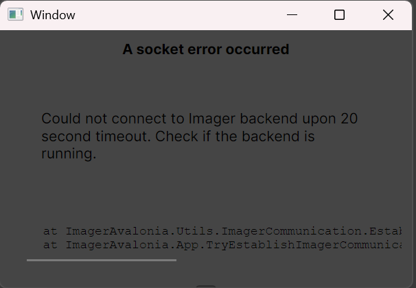

Quick start
Starting up
The folder structure of the Imager is as follows
├── PluginConfigurations/
├── Plugins/
├── python/
├── SmartProgramPython/
├── Config.json
├── equipment.txt
├── Imager.exe
├── ImagerAvalonia.Desktop.exe
├── LogBookConfigEnd.json
├── LogBookConfigStart.json
├── MeasurementImageStorageDLL.dll
└── MeasurementImageStorageDLL.lib
Start Imager backend
Start Imager.exe. Once Imager is running, you will see the following window:

⚠️ Important: Do not close this window during your measurement
🛠️ Troubleshooting: If the window closes immedeately, this means that Imager has encountered an error. To see the error message,
open the command line in the imager folder, and run .\Imager.exe. This will force the window to stay open when a crash occurs
Start Imager graphical user interface
Start ImagerAvalonia.Desktop.exe. Once the GUI is running, you will see the following window:

You will be prompted to fill in the log book. You can disable the logbook by modifying Config.json:
{
"islogbookenabled": false // default is true
}
Once you fill in your name at the top, and everything used during the measurement, you will be redirected to the main view:

🛠️ Troubleshooting: If you see this meassage:
This means that Imager.exe is not running. Start Imager.exe and then the graphical user interface

This means that Imager.exe is not running. Start Imager.exe and then the graphical user interface
Disabling dummy cameras
You can disable the dummy cameras after the first run of the program, by going to PluginConfigurations\SCCameraConfig.toml.
Inside the file, set:
dummyenabled=false
This will disable dummy cameras in subsequent runs